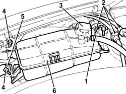
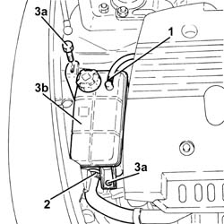

1088B10 ENGINE COOLING TANK - R + R
- Path
- Procedures > 10 ENGINE UNIT > 1088 ENGINE COOLING > 1088B ENGINE COOLING TANK - R + R > 1088B10 ENGINE COOLING TANK - R + R
- Kind
- repair procedure (removal / refitting; the operation number is the code)
- Applies to
- all engines; all production periods
- Interactive page
- https://sloeber94.github.io/elrnDB-aGt/en/#/125001173
Applies to: engines: 2.0 JTS; all production periods
 Removing
Removing
 Refitting
Refitting1. Loosen the coolar and disconnect the coolant return pipe from the engine coolant reservoir.
2. Release the fuel vapour recovery pipes from the fastenings near the engine cooling reservoir.
3. Remove plug and drain the coolant from the reservoir using an appropriate syringe.
4. Undo the bolts securing the engine coolant reservoir.
5. Loosen the collar and disconnect the supply pipe from the engine coolant reservoir.
6. Remove the engine coolant reservoir.

Applies to: engines: 2.0 JTS; all production periods
Refitting
RemovingPlace the engine coolant reservoir back in its housing.
Connect the coolant return pipe to the engine coolant reservoir and tighten the collar.
Undo the bolts securing the engine coolant reservoir.
Secure the fuel vapour recovery pipes to the fastenings near the engine cooling reservoir.
Connect the coolant return pipe to the engine coolant reservoir to the coolant reservoir and tighten the collar.
Top up the engine cooling circuit
Applies to: engines: 3.2 V6; all production periods
Removing
Refitting1. Loosen the coolar and disconnect the coolant return pipe from the engine coolant reservoir.
2. Release the fuel vapour recovery pipes from the fastenings near the engine cooling reservoir.
3. Remove plug and drain the coolant from the reservoir using an appropriate syringe.
4. Undo the bolts securing the engine coolant reservoir.
5. Loosen the collar and disconnect the supply pipe from the engine coolant reservoir.
6. Remove the engine coolant reservoir.
Applies to: engines: 3.2 V6; all production periods
Refitting
RemovingPlace the engine coolant reservoir back in its housing.
Connect the coolant return pipe to the engine coolant reservoir and tighten the collar.
Undo the bolts securing the engine coolant reservoir.
Secure the fuel vapour recovery pipes to the fastenings near the engine cooling reservoir.
Connect the coolant return pipe to the engine coolant reservoir to the coolant reservoir and tighten the collar.
Refill the engine cooling system
Applies to: engines: 1.9 JTD 16V; all production periods
Removing
RefittingAspirate the coolant from the engine cooling reservoir using a suitable syringe.
1. Loosen the band and disconnect the coolant return pipe to the engine coolant reservoir, reservoir side.
2. Loosen the band and disconnect the power assisted steering fluid reservoir supply pipe, reservoir side.
3. Undo the nuts (3a) and remove the engine coolant supply reservoir (3b).

Applies to: engines: 1.9 JTD 16V; all production periods
Refitting
RemovingFit the engine cooling radiator in place and secure it using the bolts.
Connect the power assisted steering fluid return pipe to the reservoir and tighten the band.
Connect the coolant return pipe to the coolant reservoir, reservoir side, and tighten the collar.
Refill the engine cooling system
Applies to: engines: 1.8 T.SPARK; all production periods
Removing
Refitting- Loosen the coolar and disconnect the coolant return pipe from the engine coolant reservoir.
- Release the fuel vapour recovery pipes from the fastenings near the engine cooling reservoir.
- Remove plug and drain the coolant from the reservoir using an appropriate syringe.
- Undo the bolts securing the engine coolant reservoir.
- Loosen the collar and disconnect the supply pipe from the engine coolant reservoir.
- Remove the engine coolant reservoir.
Applies to: engines: 1.8 T.SPARK; all production periods
Refitting
Removing- Place the engine coolant reservoir back in its housing.
- Connect the coolant return pipe to the engine coolant reservoir and tighten the collar.
- Undo the bolts securing the engine coolant reservoir.
- Secure the fuel vapour recovery pipes to the fastenings near the engine cooling reservoir.
- Connect the coolant return pipe to the engine coolant reservoir to the coolant reservoir and tighten the collar.
- Top up the engine cooling circuitOp. 0010T20 COOLANT CHECK DENSITY AND TOP UP IF NECESSARY